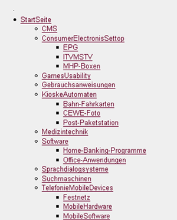
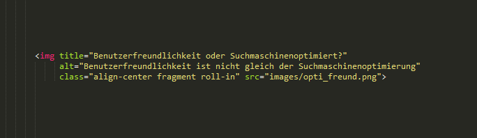
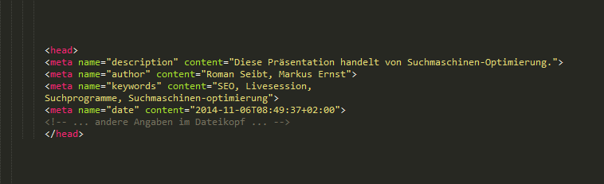
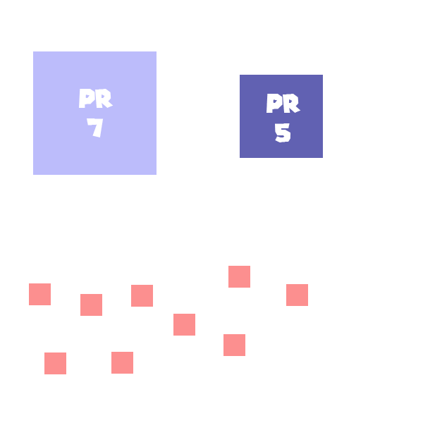

Web-basierte Anwendungen 1
Search Engine Optimization
Livession
6. November 2014
Team
Markus ErnstRoman Seibt
Betreuer:
M.Sc. Stephan Pavlovic, M.Sc. Jan KusStudiengang Medieninformatik an der Fachhochschule Köln
Campus Gummersbach
Ablauf
Einleitung
- Definition & Funktionsweise einer Suchmaschine
- Was ist SEO?
Hauptteil
- Off Page Optimierung
- On Page Optimierung
Schluss
- Résumé
- Hands On
Ablauf
Einleitung
- Definition & Funktionsweise einer Suchmaschine
- Was ist SEO?
Hauptteil
- Off Page Optimierung
- On Page Optimierung
Schluss
- Résumé
- Hands On
Einleitung
Defintion einer Suchmaschine
www.wikipedia.org
Einleitung
Was ist SEO?
- Search Engine Optimization == Suchmaschinenoptimierung
- Maßnahmen um eine Webseite im Suchmaschinenranking auf hohen Plätzen erschienen zu lassen
- On-Page Optimierung
- Off-Page Optimierung
Ablauf
Einleitung
- Definition & Funktionsweise einer Suchmaschine
- Was ist SEO?
Hauptteil
- Off Page Optimierung
- On Page Optimierung
Schluss
- Résumé
- Hands On
On-page Optimierung
Standard Domain
- Wahl eines inhaltsbeschreibenden Domain Namens
Bestenfalls Keywords mit Bindestrichen verbinden
Z.B. Sparkasse-koelnbonn.de - Eindeutige immer verfügbare Adresse
- Wichtig: Wahl des TLD an Sprache anpassen, Länderspezifisch oder International
(Top Level Domain z.B. .com oder .de) - Wahl des Providers:
- Muss entsprechende Programmiersprachen unterstützen
- Verfügbarkeit des benötigten Datenvolumens
- Große bewährte Hoster werden häufig bevorzugt
On-page Optimierung
URL- & Seitenaufbau
- Stringente Namensvergabe der Unterseiten, die die Inhalte beschreibt
- Klar und einfach definierte Adressen ohne Sonderzeichen
- Nachvollziehbarer Aufbau des Menüs sowie der Navigation
- HTML oder Text
- Niemals Bilder als Menü oder Link verwenden !!
On-page Optimierung
Sitemap
- Ist der hierarchische Aufbau einer Internetseite
- Flache Seitenhierarchie:
- Nicht zu viele Ebenen verwenden !!

- Bei einigen Suchmaschinen (z.B. Google) kann man Sitemaps einreichen um eine leichtere Indexierung aller Websites zu ermöglichen
On-page Optimierung
Content
- Wichtigster (!) Ranking Faktor
- Keywords in Texten verwenden ohne es zu übertreiben! (Keyword-Dichte 2-4%)
- Bei versuchter Manipulation der Ergebnisse kann man sogar vom Index verbannt werden
- Im Text verschiedene Schlüsselwörter verwenden
- Sauberen HTML-Code verwenden
- Crawler lesen HTML Strukturen (z.B. h1,h2,strong(...))

On-page Optimierung
Bilder
- Möglichst kleine Dateigröße
- Alternativer Text (Alt-Text) und Titel für Bilder hinzufügen 
On-page Optimierung
Title / Meta-Tags
- Title ist einer der wichtigsten On-Page-Rankingfaktoren
- Ist häufig Bestandteil des Titels des Snippets der Suchmaschinen
- Idealerweise zwei bis drei Schlüsselwörter im Title
- Achtung!: Kein Keywordstuffing
- Meta-Tags sollen den Inhalt beschreiben,
sind aber durch viel Missbrauch in der Wichtigkeit gesunken - Meta-Tag Description ist häufig der Inhalt des Snippets:
- Sollte zum Anklicken anregen

On-page Optimierung
Keywordanalyse
Analyse um relevante Keywords zu finden
- Brainstorming: Welche Worte entsprechen ihrem Thema?
- Suchen nach anderen Websites unter diesen Keywords
- Untersuchung der 3 Toptreffer
(Content-Umfang, HTML-Code, Tags) - Vorherigen Schritte nun mit Wortkombinationen
- Eigene Keywords mit den Ergebnissen abgleichenErweitern/Minimieren)
Ergebnis sollte sich auf 4-6 Keywords pro Website beschränken
(Wenn diese Begriffe gut gelistet werden, können im nachhinein Keywords immer wieder erweitert werden)
On-page Optimierung
Wissenswertes
- Gezielt auf wenige Keywords Optimieren
- Domainalter: "Old is Gold" / "Anfänger-Bonus"
- Links zu externen Websites
- Individualität + Größe (Qualität + Quantität)
- Indexierbarkeit!
Off-page Optimierung
Eingehende Links & PageRank
- Eingehende Links sind eine der wichtigsten Rankingfaktoren
- Jede Website hat einen PageRank (falls in einer Suchmaschine gelistet)
- PageRank unter Google mit der Google Toolbar sichtbar
- Linktext sowohl eingehender als auch externer
Links wichtig für Suchmaschinen - GoodToGo: Vorgefertigten Beispiel-Linktexte
für andere veröffentlichen - Linkposition und Alter spielt eine Rolle!

Off-page Optimierung
Wie nehme ich Einfluss auf Off-Page Optimierung
- Website in Webkataloge und Webverzeichnisse eintragen (Beispiel: DMOZ)
- Webblogs:
- Die Anzahl der Webblogs ist in den letzten Jahren rapide angestiegen
- Durch neue Verlinkungsmöglichkeiten vergleichsweise hohen PageRanks
=> Hochwertige Backlings!
- Link-tausch, -kauf u. -miete
- Besucherverhalten untersuchen => Logfiles erstellen
- Websites Aktualisieren!
Ablauf
Einleitung
- Definition & Funktionsweise einer Suchmaschine
- Was ist SEO?
Hauptteil
- Off Page Optimierung
- On Page Optimierung
Schluss
- Résumé
- Hands On
Résumé
- Indexieren ihrer Website!
- On-Page > Off-Page
- Auf wenige gute Keywords optimieren
- Schöne, Benutzer- und Crawlerfreundliche Programmierung
- Der größte Rankingfaktor ist der Content!
- Viel Konkurrenzanalyse
- Gute Linkstruktur zu anderen Websites
- Kontinuierlich an der Website arbeiten
- Das wichtigste ist und bleibt: Geduld
Hands On
Keywordanalyse
Konkurrenzanalyse
Vergleich & Konklusion
Keywordanalyse
1. Besuchen Sie die Website www.erco.com und schauen sich diese an.
2. Überlegen Sie sich 2-3 Keywords, die dem Thema (in Bezug auf SEO) dieser Website entsprechen könnten.
3. Untersuchen Sie den HTML-Code im Inhalt der Startseite:
- Was steht in dem Title- und Meta-Tag?
- Sind diese Synthaktisch und Inhaltlich Korrekt? (Falls überhaupt gesetzt?)
- Kommt eines Ihrer gewählten Schlüsselwörter in diesen Tags b.z.w. im Content vor?
- Erkennen Sie die Haupt-Keywords dieser Website? Ist die Website in einer Suchmaschine einer der Toptreffer unter diesen keywords?
4. Gibt es auf dieser Website Faktoren, die das Ranking in einer Suchmaschine verringern könnten?
5. Erörtern Sie mögliche Verbesserungsvorschläge und/oder gute Eigenschaften der Website im Bezug auf SEO.
Konkurrenzanalyse
6. Finden Sie mit Hilfe einer Suchmaschine die Toptreffer unter den Suchbegriffen Ihrer "Haupt-Keywords" (auch Wortkombinationen):
- Vergleichen Sie die Toptreffer mit www.erco.com.
- Welche Eigenschaften sind möglicherweise besser? Welche schlechter? (im Bezug auf SEO)
7. Würden Sie Änderungen an der von Ihnen gewählten Website vornehmen um das Suchergebnis für Ihre b.z.w. den vorhandenen Keywords zu verbessern?
Vergleich & Konklusion
8. Vergleichen Sie nun alle Keywords miteinander: (Ihre, die vorhandenen und ggf. die Toptreffer-Konkurrenz)
- Gibt es Verbesserungspotenzial im Bezug auf Keywords (im Zusammenspiel von SEO, mit Thema und dem Content)
9. Konklusion: Ist www.erco.com bereits gut Suchmaschinen-optimiert? :)
- Untersuchen Sie zum Abschluss www.erco.com mit Seorch.de anhand Ihrer (möglicherweiße verbesserten) Keywords.
Vielen Dank
für Ihre Aufmerksamkeit
Quellen
- http://static.googleusercontent.com/media/www.google.de/de/de/webmasters/docs/einfuehrung-in-suchmaschinenoptimierung.pdf
- http://suchmaschinenoptimierung.michaelsattler.de/
- http://de.wikipedia.org/wiki/Suchmaschinenoptimierung
- http://www.seo-united.de/sitemap.html
- http://www.seorch.de/
- http://www.abakus-internet-marketing.de/Suchmaschinenoptimierung/grundlag.htm